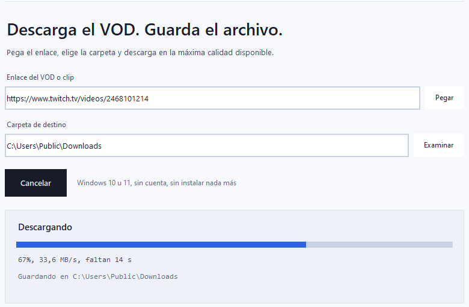
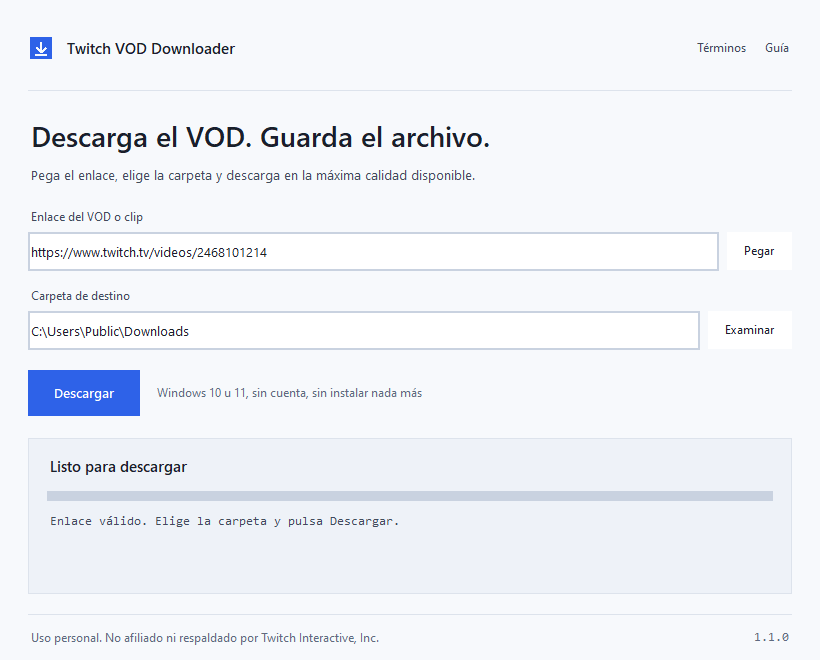
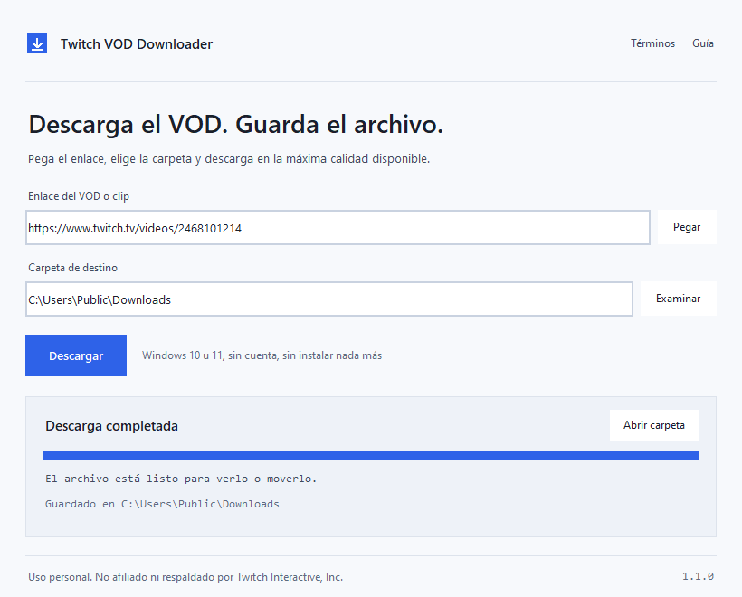

¿Hace falta instalar algo más?
No: el .exe incluye el motor y pide Windows.
Guarda VODs y clips en la máxima calidad que sirva el canal.
Gratis, sin cuenta y sin instalador. Windows 10 u 11.

Captura real: 67 % a 33,6 MB/s, faltan 14 s.
yt-dlp escribe el archivo donde elijas.
https://www.twitch.tv/videos/2468101214
VOD destacado.mp4
C:\Users\Public\Downloads
Lo que ves antes de empezar, al terminar y cuando Twitch dice que no.

El enlace se valida antes de pulsar Descargar.

Al terminar, el archivo queda en la carpeta elegida.
Un VOD restringido se explica sin cerrar la ventana.
Solo lo que tu cuenta puede ver.
Si el canal lo limita, no se guarda nada.
Twitch borra VODs; un enlace muerto no tiene archivo.
Una copia local no te da permiso para publicarla.
No: el .exe incluye el motor y pide Windows.
Depende del tamaño y la conexión. Se guarda el archivo de Twitch, normalmente MP4, sin recodificar.
Twitch lo borró o restringió; la app lo explica.
Un .exe portable. Se descarga, se abre y se usa.